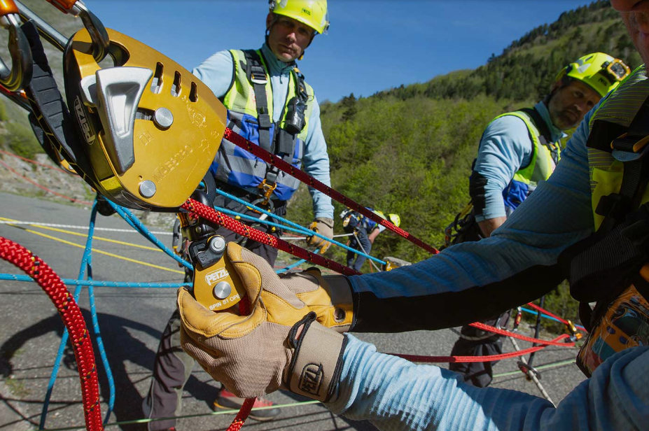

0
professionisti formati dal 2015
Diventa un professionista nei Lavori in Quota
Formazione certificata a livello internazionale con standard IRATA, GWO e Petzl Technical Institute. Impara da istruttori esperti e lavora in sicurezza fin dal primo giorno.
